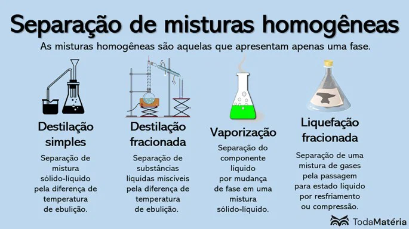
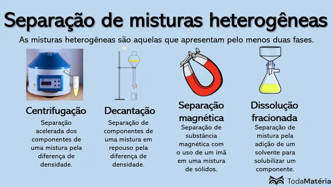
Métodos de Separação de Misturas
Na natureza e no cotidiano, é comum encontrar materiais formados por duas ou mais substâncias. A água do mar contém sais dissolvidos, o solo apresenta partículas de diferentes materiais e o ar atmosférico é composto por diversos gases. Para estudar, purificar ou aproveitar esses componentes, utilizamos os métodos de separação de misturas.
Esses métodos são técnicas que permitem separar os componentes de uma mistura aproveitando diferenças em suas propriedades físicas, como tamanho das partículas, densidade, solubilidade, magnetismo e ponto de ebulição.
Por que separar misturas?
A separação de misturas possui diversas aplicações científicas, industriais e cotidianas. Entre seus objetivos estão:
- Obter substâncias de interesse, como o sal presente na água do mar.
- Remover impurezas de materiais e produtos.
- Separar materiais recicláveis para reaproveitamento.
- Tratar a água utilizada no abastecimento público.
- Separar componentes de minérios e matérias-primas industriais.
- Identificar substâncias presentes em amostras utilizadas em laboratórios.
A escolha do método depende da composição da mistura, das propriedades de seus componentes, do grau de separação desejado e dos recursos disponíveis. Em muitos casos, é necessário combinar duas ou mais técnicas.
Tipos de misturas e escolha do método
Antes de escolher um método de separação, é importante identificar se a mistura é homogênea ou heterogênea.
Misturas heterogêneas
São misturas que apresentam duas ou mais fases, isto é, porções com características visualmente distintas ou distinguíveis por métodos adequados. Podem ser formadas por sólidos, líquidos e gases em diferentes combinações.
Exemplos: água e óleo, água e areia, granito e uma mistura de areia com limalha de ferro.
Entre os métodos utilizados para essas misturas estão catação, peneiração, filtração, decantação, centrifugação e separação magnética.
Misturas homogêneas
São misturas que apresentam uma única fase e composição uniforme em escala macroscópica. Seus componentes estão distribuídos de maneira uniforme no sistema.
Exemplos: água com sal completamente dissolvido, água com açúcar dissolvido e uma mistura homogênea de etanol e água.
Entre os métodos utilizados para separar seus componentes estão evaporação, cristalização, destilação simples, destilação fracionada e cromatografia.
Essa classificação é um ponto de partida, mas não determina sozinha o método ideal. A separação também depende das propriedades específicas dos componentes.
Métodos de separação de misturas heterogêneas
1. Catação
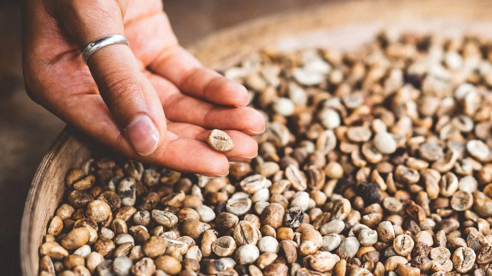
https://www.todamateria.com.br/catacao/
A catação é a separação manual dos componentes sólidos de uma mistura. Ela é utilizada quando os materiais podem ser distinguidos visualmente e retirados com as mãos ou com instrumentos, como pinças.
Exemplo: retirar pequenas pedras e impurezas de uma porção de feijão antes do preparo.
Propriedade aproveitada: diferenças visíveis entre os componentes, como cor, forma e tamanho.
2. Peneiração ou tamisação
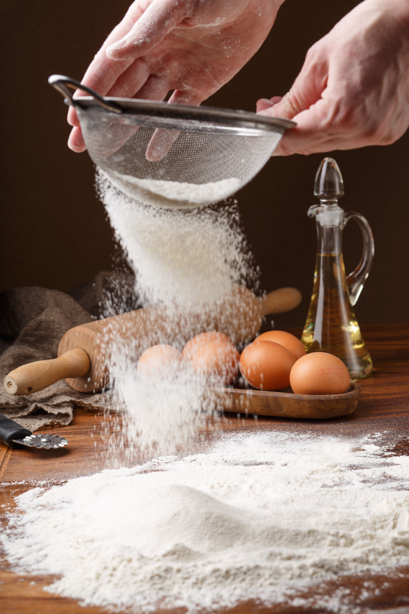
https://www.infoescola.com/quimica/peneiramento/
A peneiração consiste em passar uma mistura de sólidos por uma peneira, que permite a passagem das partículas menores e retém as maiores. O resultado depende do tamanho das partículas e da abertura da malha.
Exemplo: separar areia de pedras ou peneirar farinha para reter partículas maiores e possíveis impurezas.
Propriedade aproveitada: diferença no tamanho das partículas.
3. Ventilação
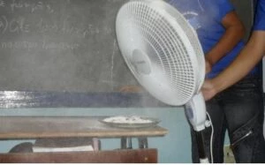
https://www.todoestudo.com.br/quimica/levigacao-peneiracao-e-ventilacao
A ventilação utiliza uma corrente de ar para separar componentes sólidos que apresentam comportamentos diferentes quando expostos ao vento. As partículas mais leves tendem a ser transportadas mais facilmente, enquanto as mais pesadas permanecem próximas ao local de separação.
Exemplo: separar cascas leves de grãos durante determinadas etapas do beneficiamento de cereais.
Propriedade aproveitada: diferenças de massa e comportamento aerodinâmico das partículas.
4. Levigação
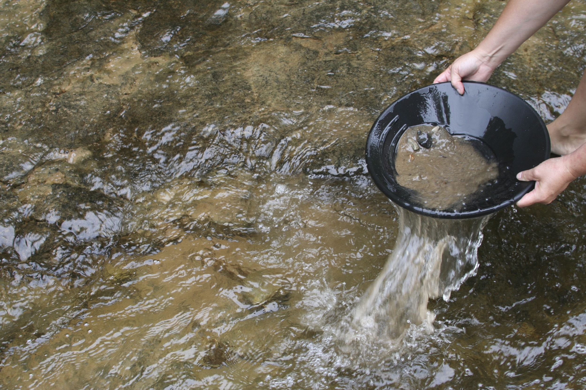
https://www.todoestudo.com.br/quimica/levigacao-peneiracao-e-ventilacao
A levigação utiliza uma corrente de água para separar sólidos de diferentes densidades. O material menos denso pode ser arrastado com maior facilidade, enquanto o mais denso tende a permanecer no recipiente.
Exemplo: em determinados processos de garimpo, uma corrente de água ajuda a separar partículas de ouro de materiais menos densos, como areia e parte dos sedimentos.
Propriedade aproveitada: diferença de densidade, associada ao comportamento dos materiais na corrente de água.
5. Separação magnética ou imantação
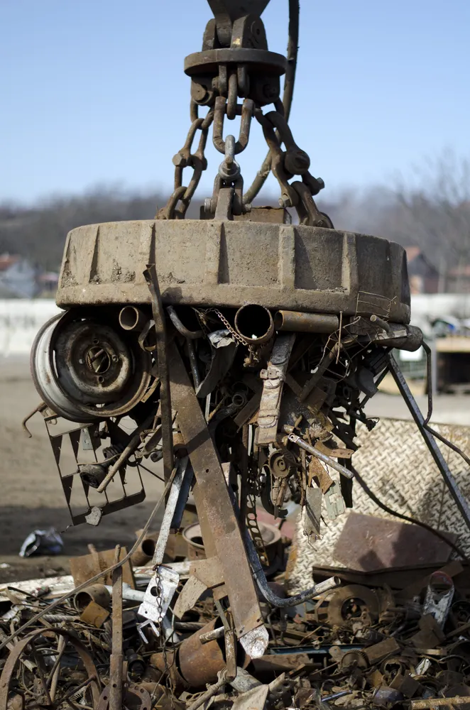
https://brasilescola.uol.com.br/o-que-e/fisica/o-que-imantacao.htm
A separação magnética utiliza um ímã ou equipamento magnético para atrair materiais que respondem ao campo magnético e separá-los de outros que não são atraídos da mesma maneira.
Exemplo: separar limalha de ferro de areia utilizando um ímã.
Propriedade aproveitada: comportamento magnético dos componentes.
Nem todos os metais são atraídos com a mesma intensidade por um ímã. Por isso, a separação magnética depende das características dos materiais presentes na mistura.
6. Flotação
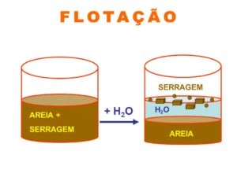
https://www.todoestudo.com.br/quimica/flotacao
A flotação é uma técnica na qual os componentes são separados por diferenças em seu comportamento em um fluido, podendo envolver diferenças de densidade ou de interação com bolhas de gás. O princípio utilizado depende do processo específico.
Em exemplos escolares simples, um componente que flutua pode ser separado de outro que afunda em um líquido. Em processos industriais, como o beneficiamento de minérios, a flotação frequentemente utiliza bolhas e diferenças nas propriedades das superfícies dos materiais.
Exemplo: em uma mistura adequada de sólidos, a adição de água pode fazer com que um material flutue e outro permaneça no fundo.
Propriedade aproveitada: diferenças de densidade ou de interação entre as superfícies dos materiais, conforme a técnica empregada.
7. Dissolução fracionada
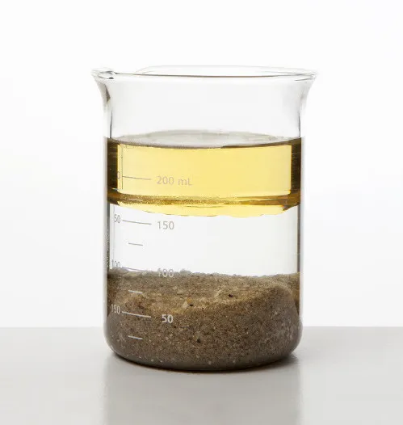
https://www.todoestudo.com.br/quimica/flotacao
A dissolução fracionada é utilizada para separar sólidos quando um dos componentes é solúvel em determinado solvente e o outro não é, ou apresenta solubilidade muito menor.
Primeiro, adiciona-se um solvente capaz de dissolver seletivamente um dos componentes. Em seguida, a mistura é filtrada para separar o sólido que não se dissolveu. Se for necessário recuperar o material dissolvido, o solvente pode ser removido por evaporação ou outro procedimento apropriado.
Exemplo: separar uma mistura de areia e sal de cozinha. Ao adicionar água, o sal se dissolve, mas a areia permanece sólida. A filtração separa a areia da solução; depois, a água pode ser removida para recuperar o sal.
Propriedade aproveitada: diferença de solubilidade em determinado solvente.
8. Filtração
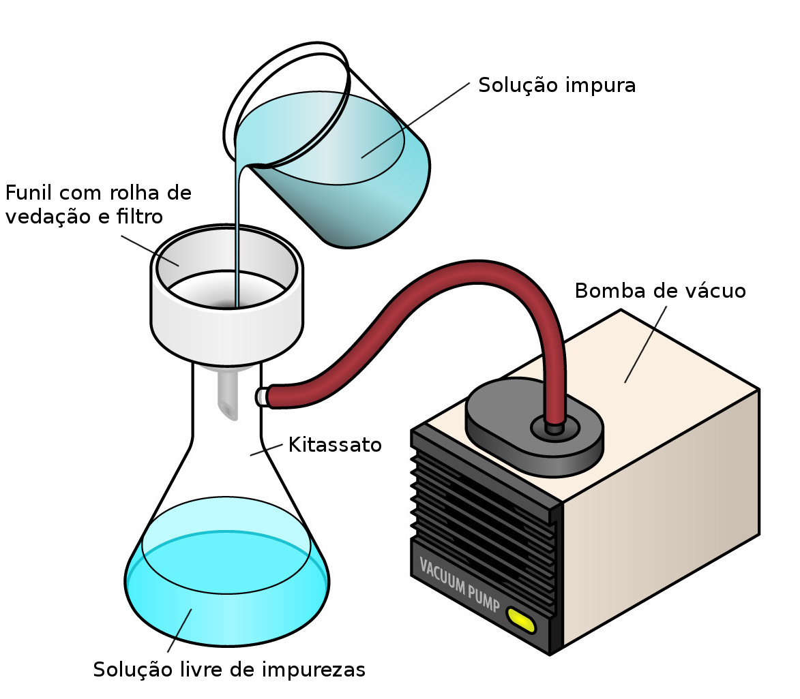
https://www.infoescola.com/quimica/filtracao/
A filtração utiliza um material poroso, chamado filtro, para reter partículas sólidas e permitir a passagem do fluido. Pode ser utilizada em misturas de sólido com líquido e também em determinadas misturas de sólido com gás.
Exemplo: coar café para reter a borra e permitir a passagem da bebida.
Propriedade aproveitada: tamanho das partículas em relação aos poros do filtro.
Na filtração, o sólido retido é chamado de resíduo, enquanto o fluido que atravessa o filtro é chamado de filtrado. Entretanto, a filtração comum não retira necessariamente todas as substâncias dissolvidas nem todos os microrganismos presentes em um líquido.
9. Decantação
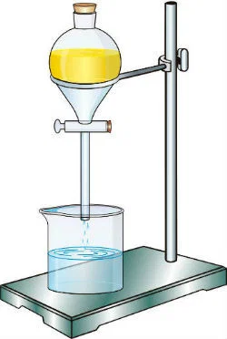
https://www.todamateria.com.br/decantacao/
A decantação permite separar componentes de uma mistura heterogênea aproveitando a diferença de densidade e a ação da gravidade. A mistura é deixada em repouso para que o componente mais denso se acumule na parte inferior, quando as condições permitem essa separação.
Quando se trata de um sólido insolúvel em um líquido, o sólido pode sedimentar no fundo do recipiente. Depois, o líquido é retirado cuidadosamente.
Exemplo: separar água e areia após deixar a mistura em repouso.
Quando os componentes são líquidos imiscíveis, como água e óleo, podem formar camadas distintas. Nesse caso, pode-se utilizar um funil de separação, também chamado de funil de decantação, para retirar uma das fases.
Propriedade aproveitada: diferença de densidade e ausência de mistura uniforme entre os componentes.
10. Sifonação
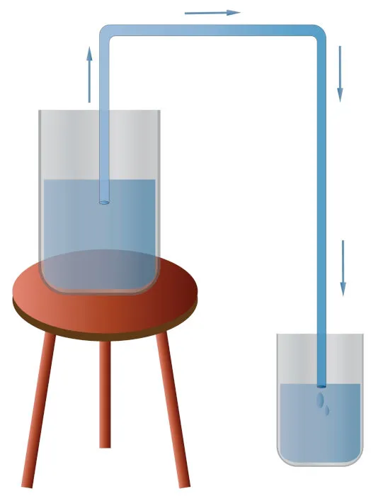
https://www.manualdaquimica.com/quimica-geral/metodos-separacao-misturas.htm
A sifonação é uma técnica de transferência de líquido por meio de um tubo, utilizada, por exemplo, para retirar o líquido de cima de um sólido que sedimentou no fundo de um recipiente.
Exemplo: após a sedimentação da areia em água, transferir cuidadosamente a água para outro recipiente utilizando um tubo, sem movimentar o sedimento.
Importante: a sifonação pode complementar a decantação, mas não é necessariamente um método independente para todos os tipos de mistura.
11. Centrifugação
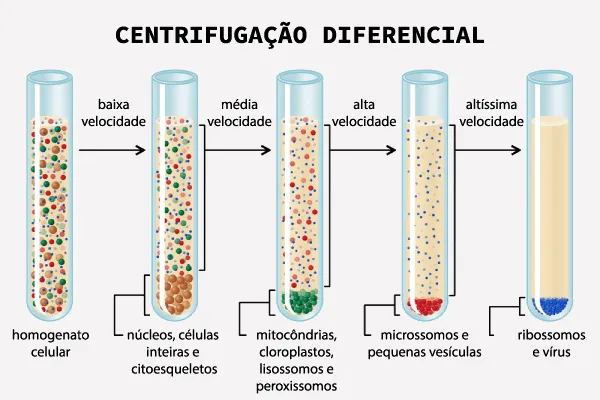
https://brasilescola.uol.com.br/quimica/centrifugacao-sifonagem-destilacao.htm
A centrifugação acelera a separação de componentes com diferentes densidades por meio da rotação rápida da mistura em um equipamento chamado centrífuga. O movimento facilita a sedimentação das partículas mais densas em relação ao fluido ou aos componentes menos densos.
Exemplo: em laboratórios clínicos, a centrifugação pode ser utilizada para separar componentes de amostras de sangue, conforme o procedimento realizado.
Outro exemplo cotidiano é o ciclo de centrifugação de uma máquina de lavar roupas, que ajuda a retirar parte da água dos tecidos.
Propriedade aproveitada: diferenças de densidade e de comportamento das partículas durante a rotação.
Métodos de separação de misturas homogêneas
12. Evaporação
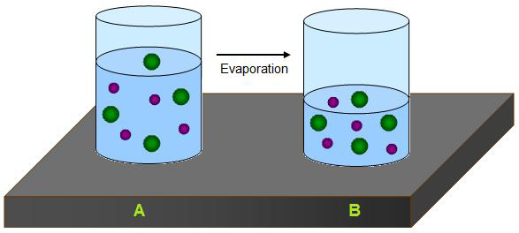
https://pt.wikipedia.org/wiki/Evapora%C3%A7%C3%A3o
A evaporação pode ser utilizada para recuperar um sólido dissolvido em um líquido, quando o objetivo é remover o solvente. O líquido passa gradualmente para o estado gasoso, enquanto o soluto permanece no recipiente, desde que não seja perdido por decomposição ou arraste.
Exemplo: a obtenção de sal a partir da água do mar em salinas, nas quais a água evapora e os sais podem permanecer e cristalizar.
Propriedade aproveitada: volatilidade do solvente e diferença de comportamento entre o solvente e o soluto.
Na evaporação, o solvente geralmente não é recuperado. Se for necessário coletá-lo, pode ser mais apropriado utilizar a destilação.
13. Cristalização
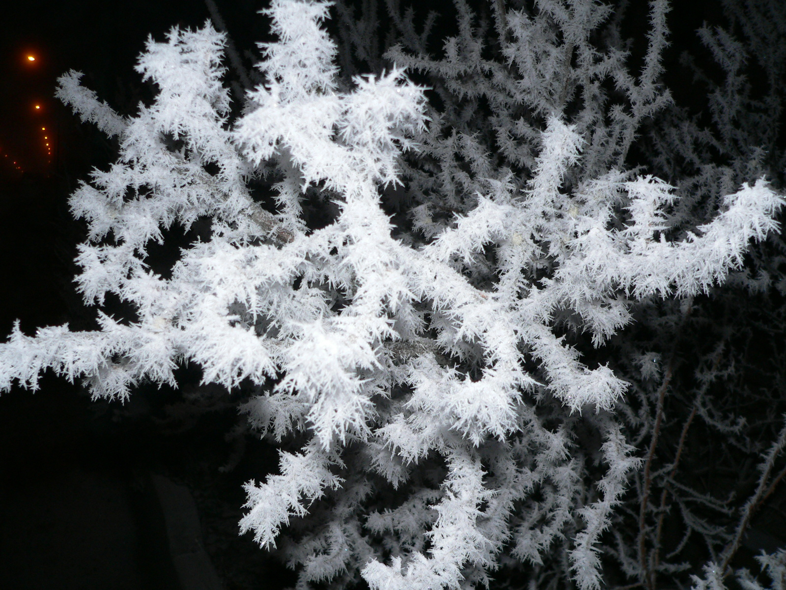
https://pt.wikipedia.org/wiki/Cristaliza%C3%A7%C3%A3o
A cristalização é utilizada para obter um sólido na forma de cristais a partir de uma solução. Isso pode ocorrer por meio da evaporação parcial do solvente, do resfriamento da solução ou de outras alterações que reduzam a solubilidade do soluto.
Exemplo: formar cristais de sal ou de açúcar a partir de uma solução adequada.
Propriedade aproveitada: variação da solubilidade em função de condições como temperatura e concentração.
A cristalização pode ser empregada tanto para recuperar um sólido quanto para purificá-lo, dependendo das condições do processo.
14. Destilação simples
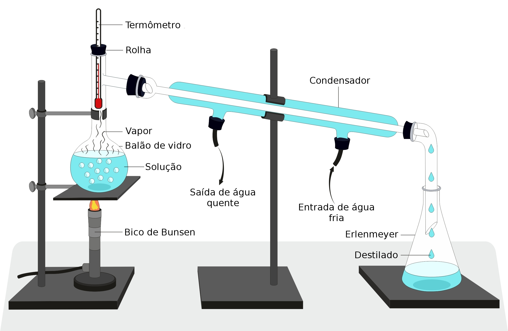
https://www.infoescola.com/quimica/destilacao-simples/
A destilação simples permite separar um líquido de um sólido dissolvido, recuperando o líquido por evaporação seguida de condensação. A mistura é aquecida, o componente mais volátil passa para o estado gasoso e, em seguida, é resfriado em um condensador para voltar ao estado líquido.
Exemplo: separar a água de uma solução de água com sal, obtendo água destilada no recipiente de coleta e deixando a maior parte do sal no recipiente de aquecimento.
Propriedade aproveitada: diferença de volatilidade entre os componentes.
A destilação simples também pode ser usada em algumas misturas de líquidos miscíveis quando a diferença entre seus comportamentos de vaporização permite uma separação adequada, embora a destilação fracionada seja geralmente mais indicada para separar líquidos com pontos de ebulição próximos.
15. Destilação fracionada
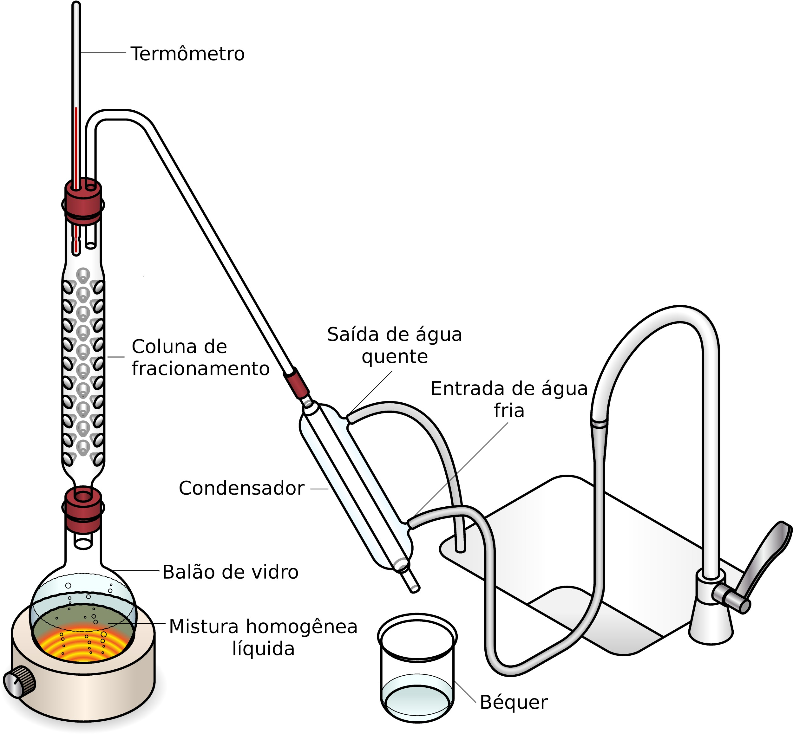
https://www.infoescola.com/quimica/destilacao-fracionada/
A destilação fracionada é utilizada principalmente para separar líquidos miscíveis com diferentes volatilidades. O equipamento possui uma coluna de fracionamento, que favorece sucessivas etapas de vaporização e condensação, enriquecendo o vapor no componente mais volátil.
Exemplo: separar componentes de uma mistura de etanol e água por meio de um processo de destilação apropriado. A separação completa desses componentes não é possível por uma destilação simples comum, devido ao comportamento de equilíbrio da mistura.
Outro exemplo industrial é o refino do petróleo, no qual a destilação fracionada separa frações que apresentam diferentes faixas de ebulição.
Propriedade aproveitada: diferenças de volatilidade e de comportamento de ebulição dos componentes.
16. Sublimação
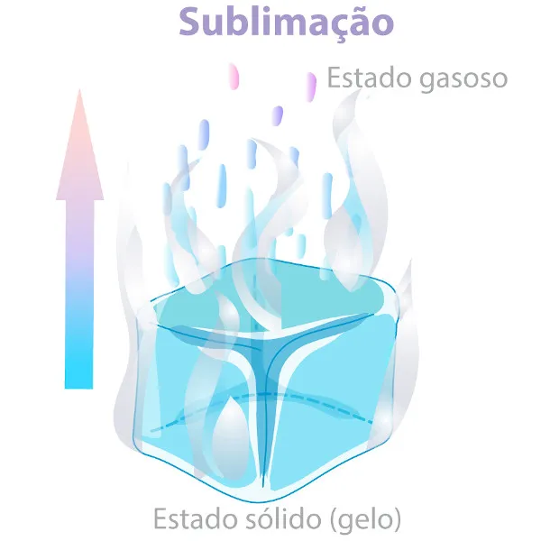
https://www.manualdaquimica.com/quimica-geral/sublimacao.htm
A sublimação pode ser utilizada para separar um sólido que passa diretamente do estado sólido para o gasoso, em condições adequadas, de outros sólidos que não sublimam nas mesmas condições.
Exemplo: uma mistura de iodo sólido com um material não sublimável pode ser separada por aquecimento controlado, em equipamento apropriado, permitindo que o iodo sublime e depois seja recolhido após a deposição.
Propriedade aproveitada: diferença no comportamento de sublimação dos componentes.
Esse procedimento exige cuidados de laboratório, pois algumas substâncias liberam vapores perigosos. Não deve ser realizado em casa com substâncias desconhecidas.
17. Cromatografia
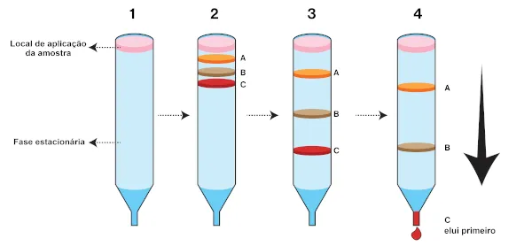
https://brasilescola.uol.com.br/quimica/cromatografia.htm
A cromatografia é uma técnica que separa componentes de uma mistura com base nas diferenças de interação entre duas fases: uma fase estacionária, que permanece no lugar, e uma fase móvel, que se desloca através dela.
Os componentes da mistura percorrem o sistema de maneiras diferentes, pois podem apresentar afinidades distintas pelas duas fases. Dessa forma, eles se separam ao longo do percurso.
Exemplo: a cromatografia em papel pode ser utilizada para separar pigmentos presentes em determinadas tintas ou extratos vegetais.
Propriedade aproveitada: diferenças de afinidade e de distribuição dos componentes entre as fases estacionária e móvel.
A cromatografia possui diversas aplicações em laboratórios, análises ambientais, controle de qualidade de alimentos e identificação de componentes em amostras complexas.
18. Liquefação e destilação fracionada de gases
Misturas de gases podem ser separadas por processos industriais que envolvem resfriamento, compressão e liquefação. Depois que a mistura é transformada em líquido sob condições adequadas, seus componentes podem ser separados por destilação fracionada, de acordo com suas diferentes volatilidades.
Exemplo: a separação industrial dos componentes do ar liquefeito permite obter substâncias como nitrogênio e oxigênio.
Propriedade aproveitada: diferenças de volatilidade e de temperaturas de ebulição dos componentes sob as condições de operação.
Tabela comparativa dos principais métodos
| Método | Tipo de mistura ou aplicação | Exemplo |
|---|---|---|
| Catação | Sólidos heterogêneos | Retirar pedras do feijão |
| Peneiração | Sólidos de tamanhos diferentes | Separar areia de pedras |
| Ventilação | Sólidos com comportamentos diferentes diante do ar | Separar cascas leves de grãos |
| Levigação | Sólidos com diferentes densidades | Separar ouro de sedimentos |
| Imantação | Sólidos com propriedades magnéticas diferentes | Separar ferro de areia |
| Flotação | Componentes com comportamentos diferentes em um fluido | Separação de materiais em processos industriais |
| Dissolução fracionada | Sólidos com diferentes solubilidades | Separar areia e sal |
| Filtração | Sólido insolúvel e fluido | Coar café |
| Decantação | Sólido e líquido ou líquidos imiscíveis | Separar água e óleo |
| Centrifugação | Componentes com diferentes densidades | Separar componentes do sangue |
| Evaporação | Sólido dissolvido em líquido | Obter sal da água do mar |
| Cristalização | Obtenção de cristais a partir de uma solução | Formar cristais de sal |
| Destilação simples | Recuperação de líquido de uma solução | Obter água destilada de água salgada |
| Destilação fracionada | Líquidos miscíveis ou frações de líquidos | Separar frações do petróleo |
| Sublimação | Sólidos com diferentes comportamentos de sublimação | Separar iodo de um sólido não sublimável |
| Cromatografia | Componentes com diferentes afinidades entre fases | Separar pigmentos de tinta |
| Liquefação seguida de destilação | Misturas de gases | Separar componentes do ar |
Combinação de métodos de separação
Uma mistura pode conter componentes com propriedades muito diferentes. Nesses casos, um único método pode não ser suficiente para separar todos os materiais, sendo necessário realizar várias etapas.
Considere, por exemplo, uma mistura de areia, sal de cozinha e água:
- Filtração: a areia, que não se dissolve na água, fica retida no filtro.
- Destilação simples: a solução de água e sal é aquecida. A água evapora, é condensada e pode ser coletada em outro recipiente.
- Recuperação do sal: o sal permanece no recipiente de aquecimento e pode ser recuperado após a remoção adequada da água.
Esse exemplo mostra como a escolha de métodos sucessivos permite separar componentes de uma mistura complexa. A sequência ideal depende das substâncias presentes e do que se deseja recuperar.
Separação de misturas no tratamento da água
O tratamento convencional da água destinada ao abastecimento público utiliza várias etapas para reduzir a presença de partículas e impurezas. Dependendo da estação e das características da água captada, podem ser empregados processos como coagulação, floculação, sedimentação, decantação e filtração, além de etapas de desinfecção e outros tratamentos.
Na coagulação e na floculação, partículas muito pequenas são agrupadas em flocos maiores, que podem ser removidos com mais facilidade nas etapas seguintes. Na sedimentação, esses flocos se depositam no fundo dos tanques; na decantação, a água é separada do material sedimentado; e, na filtração, a água atravessa meios filtrantes que retêm parte das partículas restantes.
A filtração e a decantação, por si só, não garantem que a água esteja potável. O tratamento precisa incluir as etapas necessárias para controlar microrganismos e contaminantes químicos, de acordo com a qualidade da água e as normas sanitárias aplicáveis.
Separação física e transformação química
Os métodos clássicos de separação de misturas geralmente exploram diferenças nas propriedades dos componentes sem alterar sua identidade química. Na filtração de água com areia, por exemplo, a areia continua sendo areia e a água continua sendo água.
Já em uma reação química, as substâncias podem ser transformadas em outras. A eletrólise da água, por exemplo, produz hidrogênio e oxigênio. Esse processo não é um método físico de separação de uma mistura: é uma transformação química de um composto.
Também é importante distinguir uma mistura de uma substância pura. Separar os componentes de uma mistura não significa necessariamente decompor uma substância química; o procedimento depende da natureza do sistema estudado.
Resumo do conteúdo
- Métodos de separação: técnicas que permitem separar componentes de misturas aproveitando diferenças em suas propriedades.
- Filtração: retém partículas sólidas em um filtro.
- Decantação: utiliza diferenças de densidade e a separação de fases.
- Centrifugação: acelera a separação de componentes por meio de rotação.
- Imantação: utiliza diferenças nas propriedades magnéticas.
- Dissolução fracionada: utiliza diferenças de solubilidade.
- Evaporação: remove o solvente para recuperar o material dissolvido.
- Destilação: envolve vaporização e condensação para separar componentes.
- Cromatografia: separa componentes por diferenças de interação entre fases.
- Combinação de métodos: pode ser necessária quando a mistura contém vários componentes.
Continue seus estudos
Agora que você conhece os principais métodos de separação, pode aprofundar seus conhecimentos sobre como as substâncias se comportam durante transformações.
Próximo assunto recomendado: Fenômenos físicos e químicos.
Nesse conteúdo, você aprenderá a diferenciar transformações que alteram o estado, a forma ou a aparência de um material daquelas que produzem novas substâncias.
O conteúdo dessa página foi gerado por IA pois a Moderna PLUS não se aprofunda aos conceitos de base.
Fontes consultadas
- Mundo Educação — Separação de misturas https://mundoeducacao.uol.com.br/quimica/separacao-misturas.htm
- Brasil Escola — Separação de misturas https://brasilescola.uol.com.br/quimica/separacao-misturas.htm
- Brasil Escola — Dissolução fracionada, filtração e decantação https://brasilescola.uol.com.br/quimica/dissolucao-filtracao-decantacao.htm
- OpenStax — Chemistry 2e: Phases and Classification of Matter https://openstax.org/books/chemistry-2e/pages/1-2-phases-and-classification-of-matter